We have a working real-time renderer in the browser, written with three.js and our own GLSL shaders. Every style is
built on one shared pipeline. A G-buffer pass writes normals, depth, albedo, lighting terms, mesh UVs and screen-space
motion vectors into four render targets at once, each style then shades the surface and runs its own image-space
passes, and a line pass draws ink lines on top of any style. The demo can load the homework meshes or any dropped
model file, orbit the camera, move the light, switch styles and debug views live, and play back fixed camera paths
that we will use for measurement.
Lines and pipeline (Rakesh). Motion vectors in the G-buffer, silhouette lines from depth discontinuities
and crease lines from normal discontinuities, both with a Roberts cross kernel and adjustable width and
thresholds. Lines are also drawn where two different objects touch. These parts have automated WebGL tests that
compile the real shaders and check the pixels they produce.
Toon shading (Lena). Lighting quantized into flat bands, color ramps sampled at the center of each band,
a hard-edged rim light on the lit side, and a thresholded Blinn-Phong highlight.
Hatching (Ler Koon). Screen-space hatching with up to four antialiased layers that fade in as the surface
gets darker. A tonal art map generator after Praun et al. that places strokes so that every tone contains the
strokes of the lighter tones and every mip level contains the strokes of the coarser levels. Object-space
hatching that blends the two nearest tones and maps the strokes onto the model with triplanar projection.
Painterly styles (Alex). Posterization to a fixed palette that matches colors by a mix of RGB and
brightness distance, and a Kuwahara filter that keeps the mean color of the least varied of four regions.
Preliminary results
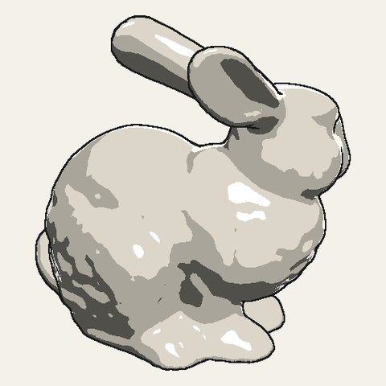
Toon shading with depth and normal lines
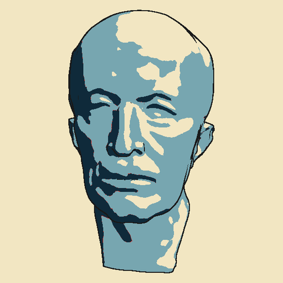
Posterization with lines
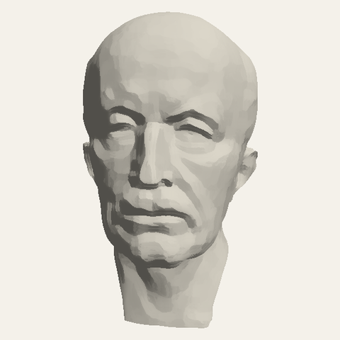
Kuwahara filter
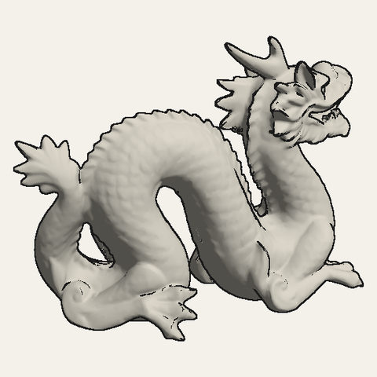
Depth and normal lines on the dragon
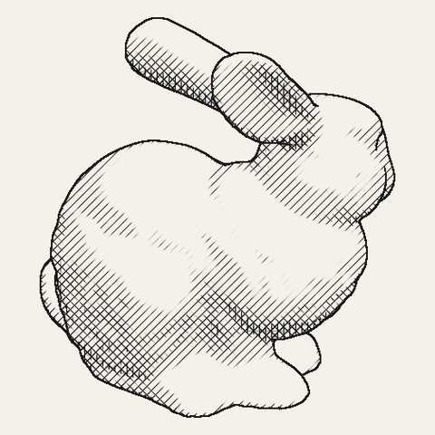
Screen-space hatching
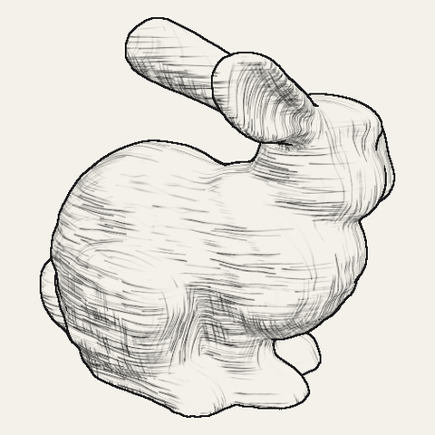
Object-space hatching with the tonal art map
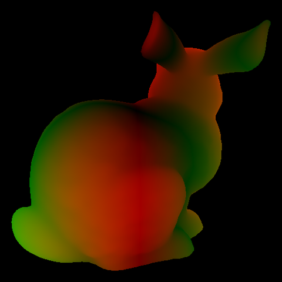
Motion vectors while the model rotates
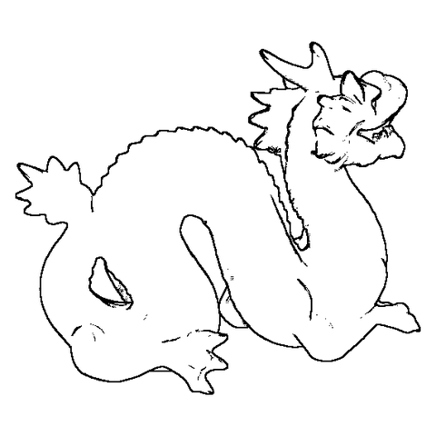
Line mask for the dragon
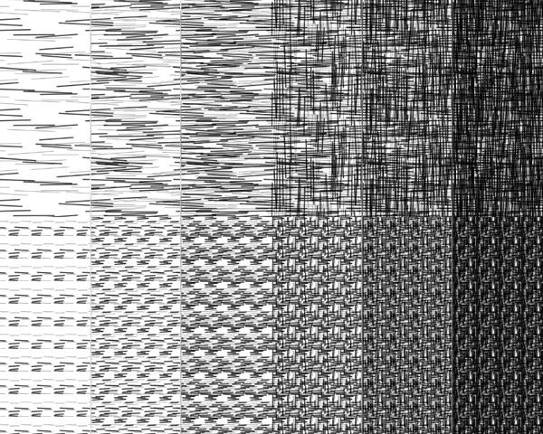
Our tonal art map, six tones from light to dark. The top half is the full-resolution texture and the bottom half is the GPU sampling it at a smaller mip level.
The comparison below shows why we need object-space hatching. Screen-space lines are fixed to the screen, so the
surface slides underneath them as the model moves, and the pattern keeps the same spacing no matter how far away the
model is. The tonal art map strokes are attached to the surface and keep roughly the same width at a distance
because the GPU switches to coarser mip levels that were drawn with the same stroke width. Up close the strokes
become blurry, because the camera has passed the finest 256 by 256 level of the map. We plan to fix this with a
finer level and by drawing more strokes per tile.
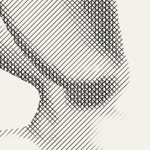
Screen space, close
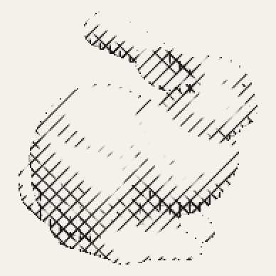
Screen space, 2.5 times further, enlarged
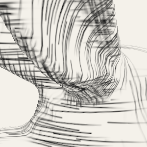
Object space, close
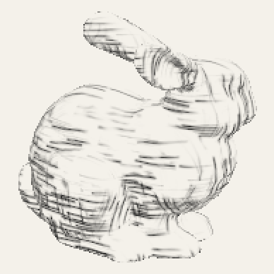
Object space, 2.5 times further, enlarged
Progress relative to our plan
We finished everything planned for week 1. The G-buffer with motion vectors, the first version of every style family
and the interface for switching styles all work. Object-space hatching was planned to be early work at the milestone
and already runs on all of our test models, so the hatching track is slightly ahead. Combining any style with the
line pass also works. We are behind on three week 2 items, the inverted-hull outline, halftone dots and the basic
watercolor effect, which we will finish in the rest of this week. None of the measurements have been run yet, since
the temporal coherence and line stability metrics need the reprojection step that warps one frame into the next.
Updated work plan
Week
Tasks
Nov 22 to Nov 26
Inverted-hull outlines and the frame reprojection used by all temporal metrics (Rakesh).
Halftone dots (Lena).
A finer tonal art map level for close-ups and tuning of stroke density (Ler Koon).
Basic watercolor with paper texture and darkened edges (Alex).
Merge every track into the main branch so the live demo has all styles.
Nov 27 to Dec 3
Implement the four metrics, line stability (Rakesh), stroke scale (Lena), temporal coherence (Ler Koon)
and performance (Alex).
Collect numbers on the fixed camera paths at 1920×1080 and compare screen-space and object-space
hatching.
Fix problems found by the measurements and start on the aspirational goals, keeping in mind Homework 4
and Exam 2 this week.
Dec 4 to Dec 8
Render the final images and the short film, and finish the comparisons.
Write the final report and record the video, due Sunday, December 6.
Prepare the presentation and demo for December 7 and 8.